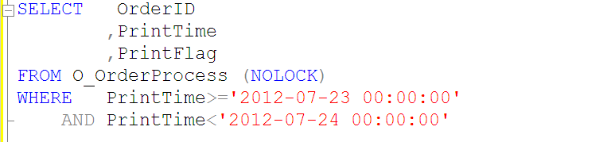
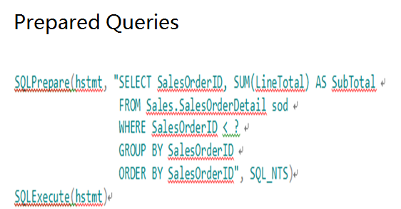
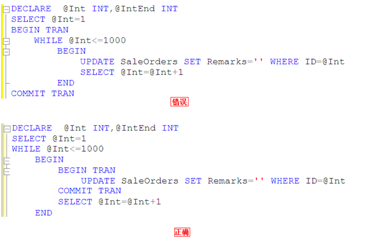
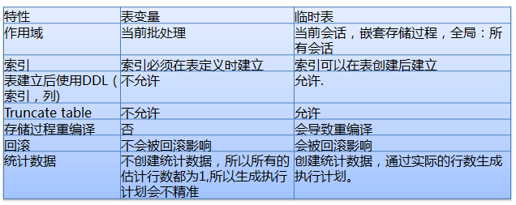

Common Field Type Selection
1. For character types, it is recommended to use varchar/nvarchar data types
2. For amounts/currency, it is recommended to use the money data type
3. For scientific notation, it is recommended to use the numeric data type
4. For auto-increment identifiers, it is recommended to use the bigint data type (When the data volume gets large, the int type won't be able to hold it, and future modifications would be troublesome)
5. For time types, it is recommended to use the datetime data type
6. The old data types text, ntext, and image are prohibited
7. The xml data type, varchar(max), and nvarchar(max) are prohibited
Constraints and Indexes
Every table must have a primary key
- Every table must have a primary key to enforce entity integrity
- A single table can only have one primary key (null and duplicate data are not allowed)
- Try to use single-field primary keys
Foreign keys are not allowed
- Foreign keys increase the complexity of table structure changes and data migration
- Foreign keys affect insert and update performance, and the primary/foreign key constraints need to be checked
- Data integrity is controlled by the application
NULL attribute
For newly added tables, NULL is prohibited for all fields
（Why are NULLs not allowed in new tables?
Allowing NULL values increases the complexity of the application. You must add specific logic code to prevent various unexpected bugs
Three-valued logic: all queries with the equals sign ("=") must include an ISNULL check.
Null=Null, Null!=Null, not(Null=Null), and not(Null!=Null) are all unknown, not true）
Let me give an example to illustrate:
If the data in the table is as shown in the figure:

If you want to find all data except where name equals 'aa', and you inadvertently use SELECT * FROM NULLTEST WHERE NAME<>'aa'
You'll find the result is different from what you expected. In fact, it only returns the record with name=bb and does not return the record with name=NULL
So how do we find all data except where name equals 'aa'? We can only use the ISNULL function
SELECT * FROM NULLTEST WHERE ISNULL(NAME,1)<>'aa'
But you may not know thatISNULL can cause serious performance bottlenecks, so in many cases it's best to restrict user input at the application level, ensuring users enter valid data before performing queries.
When adding new fields to an old table, they need to be allowed to be NULL (to avoid full-table data updates and blocking caused by long-term lock holding)(This mainly considers the issue of modifying existing tables)
Index Design Guidelines
- Indexes should be created on columns frequently used in WHERE clauses
- Indexes should be created on columns frequently used to join tables
- Indexes should be created on columns frequently used in ORDER BY clauses
- Indexes should not be created on small tables (tables that use only a few pages), because a full table scan may be faster than a query using an index
- No more than 6 indexes per table
- Don't create single-column indexes on fields with low selectivity
- Make full use of unique constraints
- Indexes should contain no more than 5 fields (including included columns)
Don't create single-column indexes on fields with low selectivity
- SQL Server has requirements for the selectivity of indexed fields. If the selectivity is too low, SQL Server will give up using it
- Fields not suitable for creating indexes: gender, 0/1, TRUE/FALSE
- Fields suitable for creating indexes: ORDERID, UID, etc.
Make full use of unique indexes
Unique indexes provide SQL Server with information ensuring that a certain column absolutely has no duplicate values. When the query analyzer finds one record through a unique index, it will exit immediately and not continue searching the index
No more than 6 indexes per table
No more than 6 indexes per table (This rule was just established by Ctrip DBAs after experimentation...)
- Indexes speed up query performance, but they affect write performance
- A table's indexes should be created comprehensively based on all SQL statements related to that table, and should be merged as much as possible
- The principle of composite indexes is that fields with better filtering should be placed earlier
- Too many indexes not only increase compilation time, but also affect the database's selection of the best execution plan
SQL Queries
- Complex operations in the database are prohibited
- Using SELECT * is prohibited
- Using functions or calculations on indexed columns is prohibited
- Using cursors is prohibited
- Using triggers is prohibited
- Specifying indexes in queries is prohibited
- Variable/parameter/join field types must match the field type
- Parameterized queries
- Limit the number of JOINs
- Limit the length of SQL statements and the number of IN clause conditions
- Try to avoid large transaction operations
- Disable the return of affected row count information
- Unless necessary, all SELECT statements must include NOLOCK
- Use UNION ALL instead of UNION
- Use pagination or TOP when querying large amounts of data
- Recursive query level limit
- Use NOT EXISTS instead of NOT IN
- Temporary tables and table variables
- Use local variables to choose a moderate execution plan
- Try to avoid using the OR operator
- Add transaction exception handling mechanisms
- Output columns use two-part naming format
Complex operations in the database are prohibited
- XML parsing
- String similarity comparison
- String search (CHARINDEX)
- Complex operations are completed on the application side
Using SELECT * is prohibited
- Reduce memory consumption and network bandwidth
- Give the query optimizer the opportunity to read the required columns from the index
- When table structure changes, it can easily cause query errors
Using functions or calculations on indexed columns is prohibited
In the WHERE clause, if the index is part of a function, the optimizer will no longer use the index and will use a full table scan instead
Assuming there is an index on field Col1, the following scenarios will not be able to use the index:
ABS[Col1]=1
[Col1]+1>9
Let me give another example

A query like the one above will not be able to use the PrintTime index on the O_OrderProcess table, so we should use the query SQL shown below

Using functions or calculations on indexed columns is prohibited
Assuming there is an index on field Col1, the following scenarios will be able to use the index:
[Col1]=3.14
[Col1]>100
[Col1] BETWEEN 0 AND 99
[Col1] LIKE 'abc%'
[Col1] IN(2,3,5,7)
Index issues with LIKE queries
1. [Col1] LIKE "abc%" – index seek. This uses an index seek
2. [Col1] LIKE "%abc%" – index scan. But this does not use an index seek
3.[Col1] like “%abc” – index scan. This also does not use index-based querying.
From the three examples above, everyone should understand that it is best not to use fuzzy matching before the LIKE condition, otherwise index-based querying cannot be used.
Using cursors is prohibited
Relational databases are suitable for set operations, that is, performing set operations on the result set determined by the WHERE clause and selected columns. Cursors provide a means of non-set operations. In general, the functionality implemented by cursors is often equivalent to what a client-side loop implements.
Cursors place the result set in server memory and process records one by one through a loop, which consumes a great deal of database resources (especially memory and lock resources).
(Besides, cursors are honestly quite complex and not very user-friendly, so use them as little as possible.)
Using triggers is prohibited
Triggers are opaque to the application (the application layer has no idea when a trigger will fire, nor does it know when it has fired—it feels inexplicable...)
Specifying indexes in queries is prohibited
With(index=XXX) (In queries, when we specify an index, we generally use With(index=XXX))
- As data changes, the index specified by the query statement may no longer offer the best performance.
- Indexes should be transparent to the application. For example, if the specified index is dropped, it will cause query errors, which is not conducive to troubleshooting.
- Newly created indexes cannot be used by the application immediately; they only take effect after code is deployed.
Variable/parameter/join field types must match the field type (This is something I didn't pay much attention to before)
Avoid the extra CPU consumption caused by type conversion; the large table scans it triggers are especially severe.


Looking at the two figures above, I think I do not need to explain further—everyone should already be clear about this.
If the database field type is VARCHAR, it is best to specify the type as AnsiString in the application and explicitly specify its length.
If the database field type is CHAR, it is best to specify the type as AnsiStringFixedLength in the application and explicitly specify its length.
If the database field type is NVARCHAR, it is best to specify the type as String in the application and explicitly specify its length.
Parameterized queries
The following methods can be used to parameterize query SQL:
sp_executesql
Prepared Queries
Stored procedures
Let me illustrate with a figure, haha.


Limit the number of JOINs
- The number of table JOINs in a single SQL statement must not exceed 5.
- Too many JOINs can cause the query analyzer to choose the wrong execution plan.
- Too many JOINs consume a lot when compiling the execution plan.
Limit the number of conditions in IN clauses
Including a very large number of values (thousands) in the IN clause can consume resources and return error 8623 or 8632. The number of conditions in the IN clause must be limited to within 100.
Try to avoid large transaction operations
- Only start a transaction when data needs to be updated, reducing the holding time of resource locks.
- Add a pre-processing mechanism for transaction exception capture.
- Distributed transactions on the database are prohibited.
Let me illustrate with a figure.

That is to say, we should not execute COMMIT TRAN only after all 1000 rows of data have been updated. Think about it—while you are updating those thousand rows, are you not exclusively occupying resources, causing other transactions to be unable to process?
Disable the return of affected row count information
Explicitly set "Set Nocount On" in SQL statements to cancel the return of affected row count information and reduce network traffic.
Unless necessary, all SELECT statements must include NOLOCK.
Unless necessary, try to add NOLOCK to all SELECT statements
Specifies that dirty reads are allowed. No shared locks are issued to prevent other transactions from modifying data read by the current transaction, and exclusive locks set by other transactions will not prevent the current transaction from reading the locked data. Allowing dirty reads may produce more concurrent operations, but the cost is reading data modifications that will later be rolled back by other transactions. This may cause errors in your transaction, display data that was never committed to users, or cause users to see records twice (or not see records at all).
Use UNION ALL to replace UNION.
Use UNION ALL instead of UNION
UNION will deduplicate and sort the SQL result set, increasing CPU, memory, and other consumption.
Use pagination or TOP when querying large amounts of data
Reasonably limit the number of records returned to avoid bottlenecks in IO and network bandwidth.
Recursive query level limit
Use MAXRECURSION to prevent unreasonable recursive CTEs from entering infinite loops.
Temporary tables and table variables

Use local variables to choose a moderate execution plan
In a stored procedure or query, if a table with a very uneven data distribution is accessed, it often causes the stored procedure or query to use a suboptimal or even poor execution plan, resulting in problems such as High CPU and a large number of IO Reads. Use local variables to prevent choosing the wrong execution plan.
With the local variable approach, SQL does not know the value of the local variable at compile time. At this point, SQL will "guess" a return value based on the general distribution of data in the table. Regardless of the variable value the user passes in when calling the stored procedure or statement, the generated plan is the same. Such a plan is generally more moderate—it may not be the optimal plan, but it generally will not be the worst plan either.
If the local variable in the query uses an inequality operator, the query analyzer uses a simple 30% formula to estimate.
Estimated Rows =(Total Rows * 30)/100
If the local variable in the query uses an equality operator, the query analyzer uses: precision * total number of table records to estimate.
Estimated Rows = Density * Total Rows
Try to avoid using the OR operator
For OR operators, a full table scan is usually used. Consider splitting the query into multiple queries implemented with UNION/UNION ALL. Here, you need to confirm that the query can use an index and return a smaller result set.
Add transaction exception handling mechanisms
The application should handle exceptions properly and perform Rollback in a timely manner.
Set the connection property "set xact_abort on".
Output columns use two-part naming format
Two-part naming format: TableName.ColumnName
In TSQL with JOIN relationships, fields must indicate which table they belong to. Otherwise, after future table structure changes, program compatibility errors such as "Ambiguous column name" may occur.
Architecture Design
- Read-write separation
- Schema decoupling
- Data lifecycle
Read-write separation
- Consider read-write separation from the very beginning of the design, even if reads and writes use the same database—this is beneficial for rapid scaling.
- According to read characteristics, divide reads into real-time reads and deferrable reads, corresponding to the write database and read database respectively.
- Read-write separation should consider automatically switching to the write side when reads are unavailable.
Schema decoupling
Cross-database JOINs are prohibited.
Data lifecycle
Based on data usage frequency, periodically archive large tables into separate databases.
Physically separate the primary database and archive database.
Log-type tables should be partitioned or split into multiple tables
Large tables should be partitioned. Partitioning distributes tables and indexes across multiple partitions. Through partition switching, old and new partitions can be quickly replaced, speeding up data cleanup and greatly reducing IO resource consumption.
Tables with frequent writes need to be partitioned or split into multiple tables
Auto-increment and Latch Lock
Latch locks are applied for and controlled internally by SQL Server itself; users have no way to intervene. They are used to ensure the consistency of data structures in memory, and the lock level is page-level lock.
Source: http://www.codeceo.com/article/sql-server-tips.html
Click me to share notes
<p style="font-size:14px;">The notes need to be an extension of the content of this article!</p><br> <p style="font-size:12px;"><a href="../tougao.html" target="_blank">Article submission, click here</a></p> <p style="font-size:14px;"><a href="./runoob-user-test-intro.html" target="_blank">How to get a registration invitation code</a></p> <h3 class="text-muted"><i class="fa fa-info-circle" aria-hidden="true"></i> You must <a href=".." class="runoob-pop">log in</a> before sharing notes!</h3> <p><a href="./runoob-user-test-intro.html" target="_blank">How to get a registration invitation code</a></p>